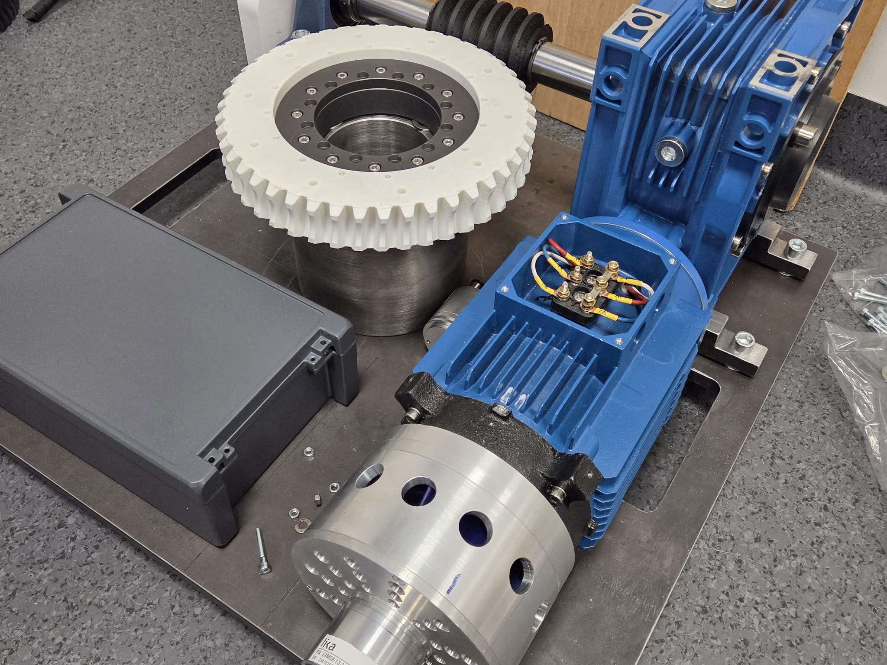
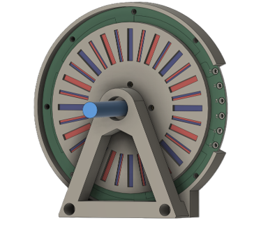
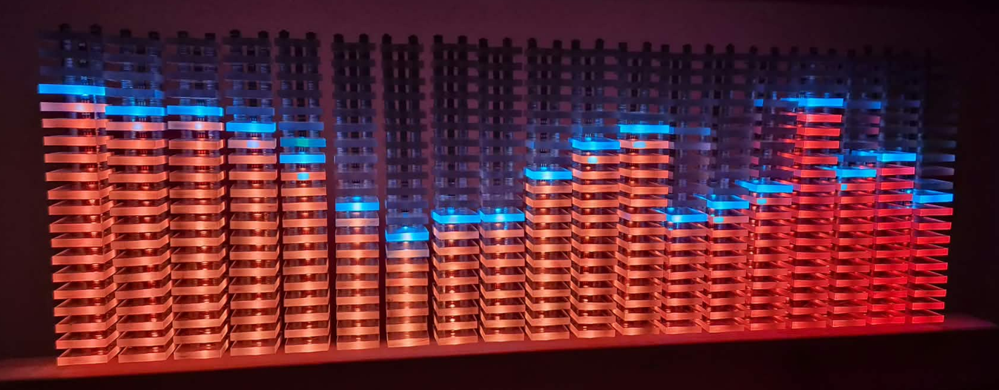
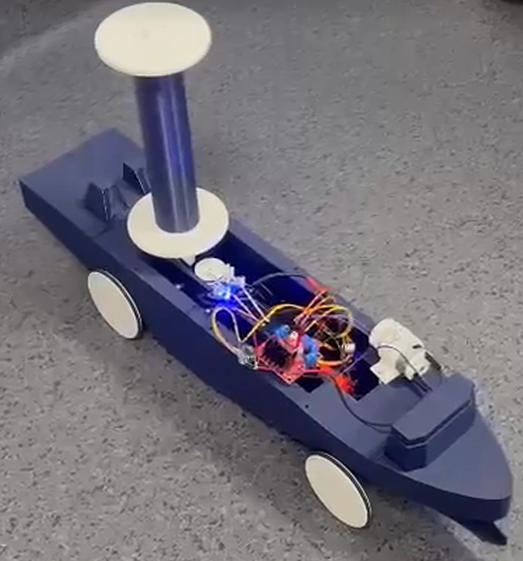
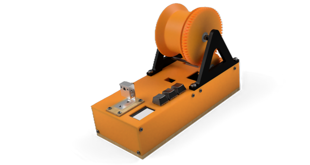
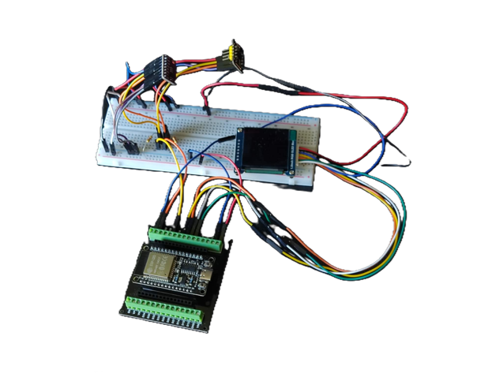

☰

EN
Strona główna
Sekcje Koła
Członkowie
Nasze projekty
Osiągnięcia
Wydarzenia
Współpraca
Kontakt
Nasze projekty

Cyfrowy bliźniak
Projekt Bezpiecznego Rotora Scenicznego

Napęd elektryczny
Projekt silnika PMSM

Elektronika i ESP32
Analizator dźwięku

Mechanika i automatyka
Rotor Flettnera

Druk 3D i recykling
Filament z butelek PET

Elektronika pomiarowa
System monitorowania parametrów życiowych
×
❮
Zdjęcia w przygotowaniu
❯
1 / 1